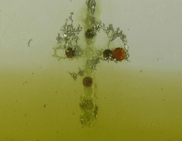
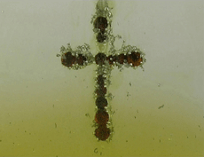

|

GISBERT STACH
TRANSFORMATION | 2006 | 7’30
Format: DVD
Ein silbernes mit roten Edelsteinen besetztes Schmuckkreuz hängt in einer säurehaltigen Flüssigkeit und wird von dieser innerhalb von Minuten aufgelöst.
Die Metallschichten lösen sich fetzenartig ab, die eingefassten Edelsteine fallen aus ihren Halterungen in die Tiefe. Ein rapider Zerfallsprozess lässt die gesamte Struktur der statischen Form in sich zusammensinken. Es findet eine Transformation des materiellen und spirituellen Werts statt.
Gisbert Stach , geb. 1963 in Freiburg i. Breisgau. Ausbildung zum Silberschmied, Studium an der Fachhochschule für Kunst und Design, Köln, und der Akademie der Bildenden Künste, München. 1996 Diplom. 15th International Silverart Competition. Galeria Sztuki, Legnica, Polen: Grand Prix 2006. Lebt und arbeitet in Gräfelfing und München.
Filme: Aus der Sicht eines Ringes 1993 | Untergang 2002
Ausstellungen: Gioielli di Gisbert Stach. Officina PD 362, Padua, Italien 1998 | Embedded Jewellery. Galerie V&V, Wien, Österreich 2003 | Meilensteine. Gästekasino, Versicherungskammer Bayern, München 2004
Ausstellungsbeteiligungen (Auswahl)
Kunst hautnah. Künstlerhaus, Wien, Österreich 2000 | Mikromegas. Galerie für angewandte Kunst, München; American Craft Museum, New York, USA; Musée de l'horlogerie et de l'émaillerie, Genf, Schweiz u.a. (Wanderausst. bis 2004) 2001 | lovely. Kunstverein Kohlenhof, Nürnberg 2002 |
Museumsshop. Galerie Katia Rid, München 2002 | Danner-Preis 2005. Bayerisches Nationalmuseum, München 2005 | Skandal! 15th International Silverart Competition. Galeria Sztuki, Legnica, Polen 2006
zurück
|